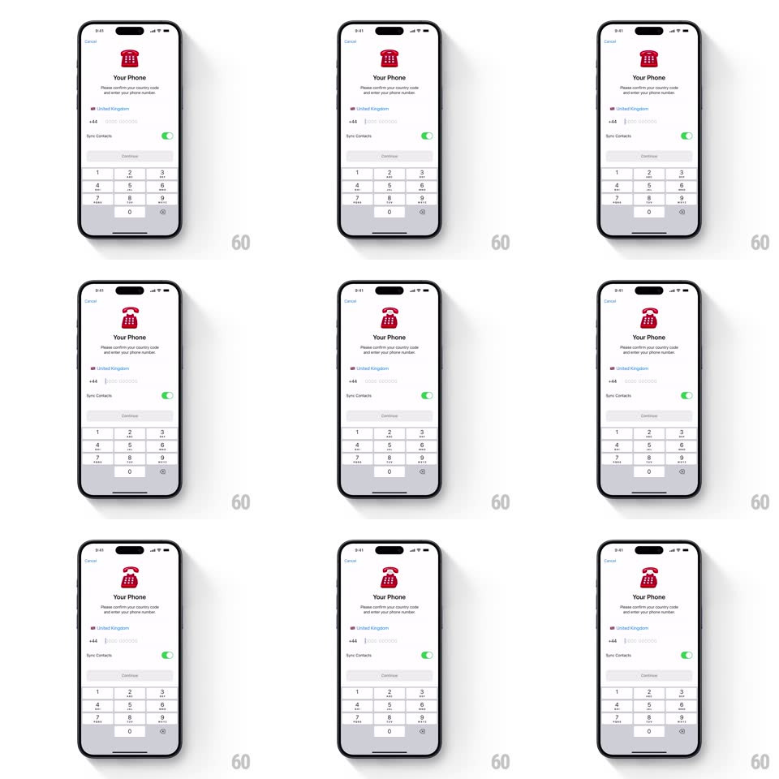

Media
Frame-by-frame

Rebuild this interaction 1:1: Telegram's "Your Phone" registration screen - a red retro telephone illustration at the top idles and morphs through poses (rotary dial, handset lifting off the base) while the form below stays perfectly still.

Rebuild this interaction 1:1: Telegram's "Your Phone" registration screen - a red retro telephone illustration at the top idles and morphs through poses (rotary dial, handset lifting off the base) while the form below stays perfectly still. ## Integration Integration: stack-agnostic spec - springs given as stiffness/damping, timed motions as duration + curve; map every value to your framework and animation library of choice. ## Scene A white registration screen: Cancel top-left, then a red retro telephone illustration, "Your Phone" title, helper copy, a country row with flag, a +code phone field, a Sync Contacts toggle, a disabled Continue button, and the numeric keypad docked at the bottom. ## Motion spec Pattern: idle morphing illustration. - The telephone loops a small choreography: the rotary dial spins (rotate 25deg and back, 700ms, ease-in-out), the handset lifts off the cradle (translateY -8px + rotate -6deg, spring ~300/16) hovers a beat, and sets back down with a soft bounce (spring ~380/18, slight overshoot). - The whole illustration breathes between poses: scale 1 to 1.03 over 2s, holding the composition alive without distracting from the keypad. - Each pose change is a smooth vector morph, not a cut - dial, handset, and base paths interpolate (400ms, ease-in-out). - The keypad keys highlight on press (background gray-200, instant) and digits append to the field with a tiny pop (scale 1.08 settling to 1, 120ms); Continue enables with a fade from gray to black (200ms) once enough digits exist. - The screen itself entered with a standard right-to-left push (300ms). ## Calibration - The illustration is flat red line-art (single accent red, no gradients); nothing else on screen uses the red except the phone field caret. - Idle animation pauses while the user types; it resumes 2s after the last keypress. ## Reduced motion Static illustration; keypad and button states unchanged. ## Don't miss - The phone is a LANDLINE, not a smartphone glyph - rotary dial and curved handset are the character. - The illustration sits tight against the title; the animation never pushes layout (fixed bounding box, transforms only).